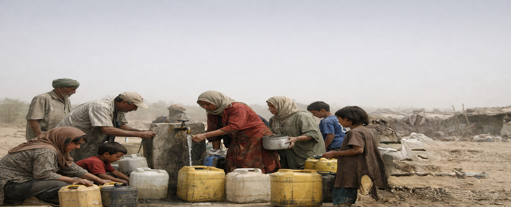
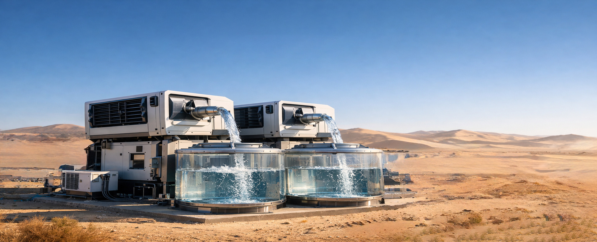

Global Water Crisis
A Threat to Humanity
More than 2 billion people lack access to safe drinking water
Water From Air
Pure & Sustainable
Mechanical technology producing water without electricity
W-1 Water Project
Unlimited Clean Water
A real solution for deserts, cities, and remote regions